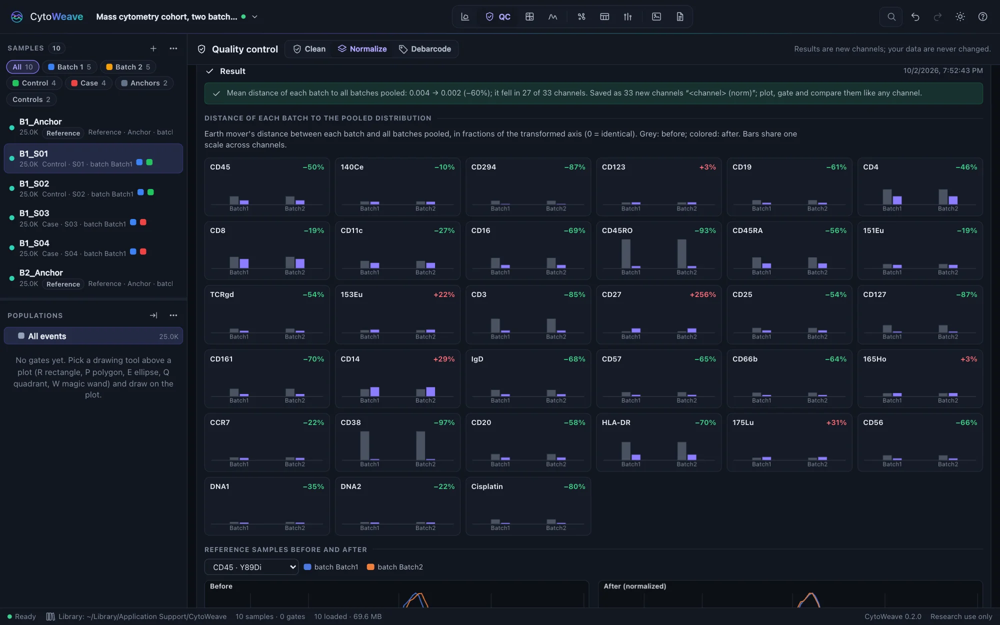
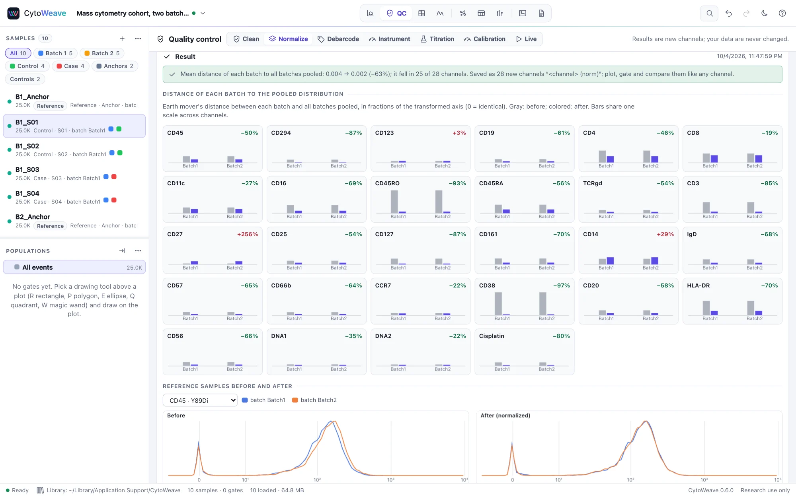
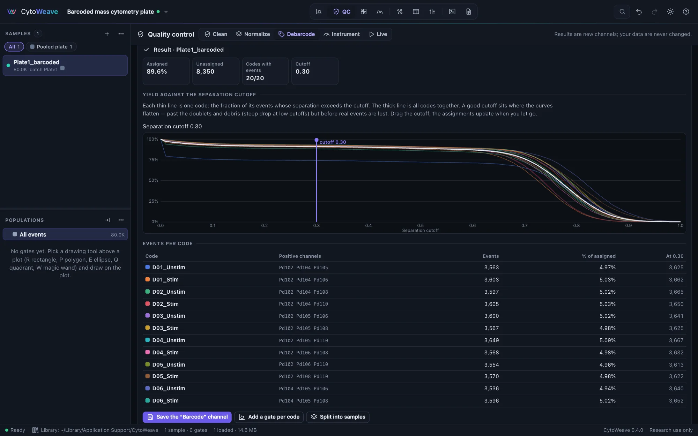
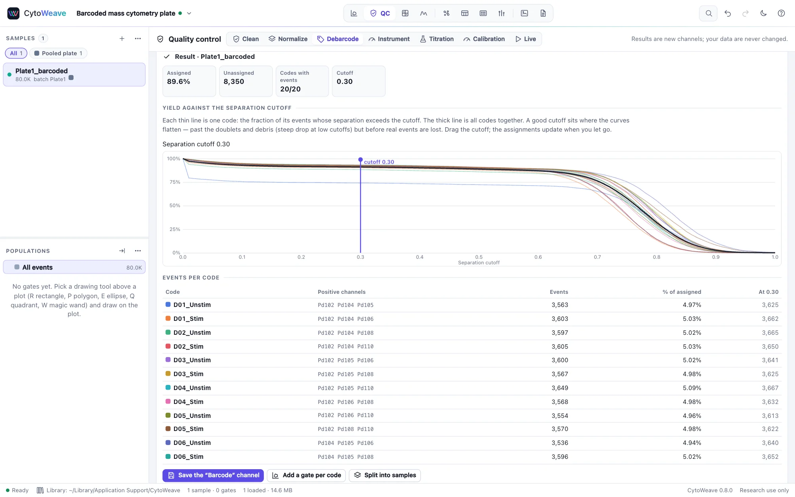

Normalization and debarcoding
Make batches comparable with reference samples or beads, and split a barcoded pool back into its samples. Both live in the QC view, next to Clean.
Neither changes your data: normalization writes new channels named "channel (norm)", and debarcoding writes a "Barcode" channel, gates or new samples. Plot, gate and compare them like any other channel.
Batch normalization with CytoNorm


CytoNorm (Van Gassen et al. 2020) learns, for each batch and channel, a monotone spline that maps the batch's quantiles onto a shared target, from a reference sample acquired in every batch (the same control, such as an aliquot of one donor's cells). The splines are then applied to every sample of that batch.
- Annotate the batches. Give every sample a batch field: the day or run it was acquired. See Annotating the design.
- Mark the references. Set the role of each batch's anchor sample to Reference. At least two batches need one.
- Open QC → Normalize, and choose the Markers to normalize.
- Choose the Clustering: None: one global model, or a clustering channel (from Explore, run on all samples) to correct batch effects that differ between cell types, one model per cluster.
- Choose the Target distribution (the mean of the batches, CytoNorm's default, or their median) and the number of Quantiles (99, CytoNorm's default).
- Click Train and normalize.
Confounding check. Before training, CytoWeave checks the batch design. If batch and condition are confounded (all cases in one batch, all controls in the other), normalization would remove the biology along with the batch effect, so it stops and says so. You can still go ahead with I understand; normalize anyway.
The Result shows, for every channel, the earth mover's distance of each batch to all batches pooled, before (gray) and after (colored), and Reference samples before and after overlays the references, which should overlap once normalized. In the validation suite, CytoNorm agrees with the R package to 1e-5 and reduces the distance between same-donor anchors 25-fold.
Bead normalization (mass cytometry)
Mass cytometers lose sensitivity during a run. EQ beads (Ce140, Eu151, Eu153, Ho165, Lu175) spiked into the sample trace that drift. Bead normalization… (Finck et al. 2013) takes a running median of the bead channels over time and scales each moment's signal back to a baseline: the mean bead medians of all the files (a shared baseline, which also puts the files on one scale) or each file's own (which removes only the drift within each file). The result reports the range of the correction over the run.
Debarcoding a pooled plate


Barcoding labels each sample with a unique combination of k positive channels out of n (for example 3 of 6 palladium isotopes), so samples can be pooled, stained and acquired together. CytoWeave uses single-cell debarcoding (Zunder et al. 2015):
- Open QC → Debarcode with the pooled file selected.
- Choose the barcode channels and Positive channels (k), how many are positive in every code. The Arcsinh cofactor sets the scale the intensities are compared on (10, the CATALYST default).
- Paste the barcode key (Paste a key) as CSV: a header row of
codeand the barcode masses (code,102,104,105,106,108,110), then one row per code with its name and a 0 or 1 for each channel (A1,1,1,1,0,0,0). Name codes after the samples they hold. Without a key, every k-of-n combination is a code, numbered in order. - Click Debarcode. Each event goes to the code of its k brightest barcode channels, after scaling each population.
- Set the separation cutoff on the yield plot. Each thin line is one code, the fraction of its events whose separation (the gap between its dimmest positive and brightest negative barcode channel) exceeds the cutoff; the thick line is all codes. A good cutoff sits where the curves flatten, past the doublets and debris but before real events are lost. Drag it; the assignments update when you let go.
- Events far from their code's population (squared Mahalanobis distance above the Mahalanobis cutoff, 30 by default) are left unassigned.
Then use the result in one of three ways:
- Save the "Barcode" channel, to gate or color by.
- Add a gate per code: one category gate per code at the top of the gating tree.
- Split into samples: one new sample per code, named after it (or after the sample the key gives it), which you can then annotate with Suggest from file names and compare like any other samples.
On the validation suite's simulated plate, every assigned cell lands in its true well and 98.7% of cells are assigned.